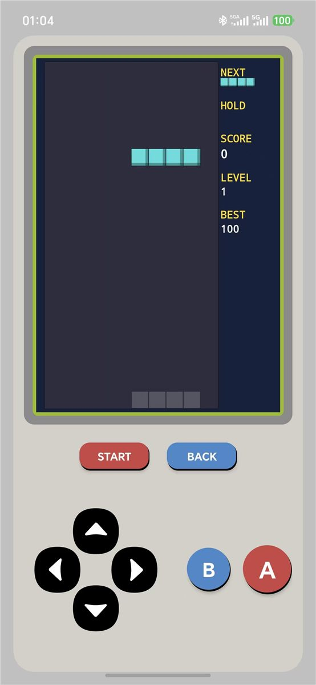
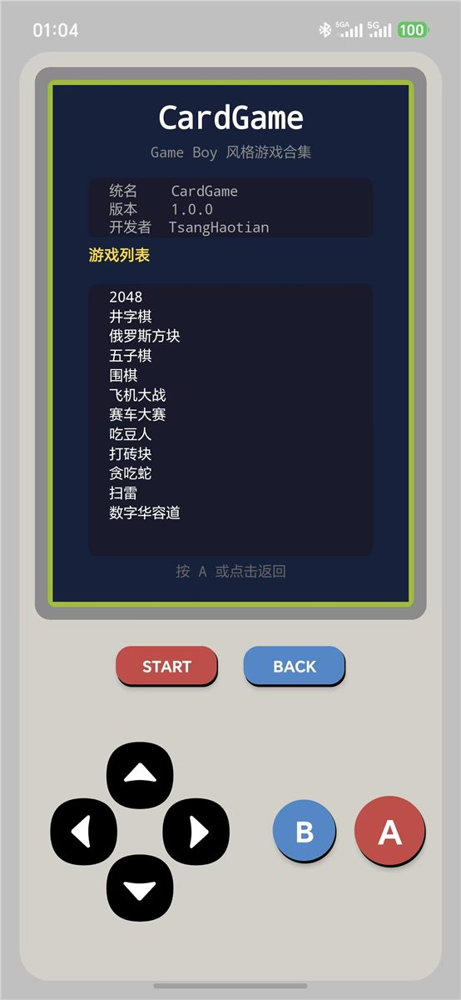
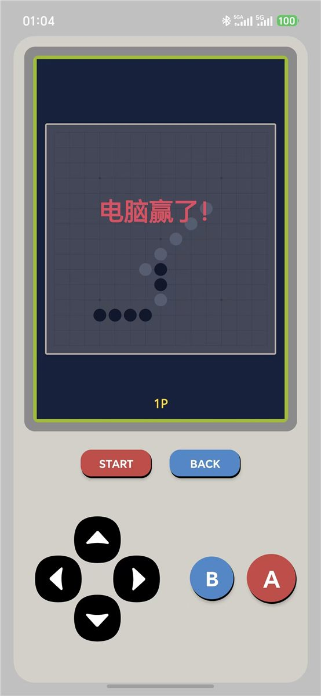
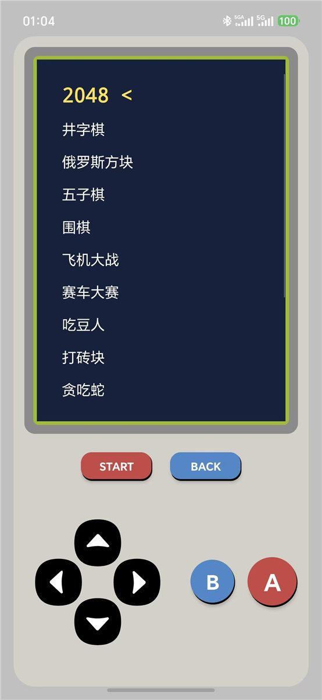

Game Boy 风格复古游戏合集 - Android 应用
一款 Game Boy 风格的复古游戏合集 Android 应用，内置 12 款经典小游戏，包括 2048、俄罗斯方块、五子棋、围棋、贪吃蛇、扫雷等。界面采用复古掌机风格设计，配有十字键和 A/B 按键操控，支持最高分记录、震动反馈和桌面小组件。
| 游戏 | 说明 |
|---|---|
| 2048 | 滑动合并数字方块 |
| 井字棋 | 3×3 经典井字棋，支持 1P/2P |
| 俄罗斯方块 | 经典下落方块游戏 |
| 五子棋 | 15×15 五子连珠，支持 AI 对战 |
| 围棋 | 15×15 围棋，支持提子规则与 AI |
| 飞机大战 | 竖屏射击躲避游戏 |
| 赛车大赛 | 三车道躲避对向来车 |
| 吃豆人 | 迷宫吃豆，方向键操控 |
| 打砖块 | 挡板反弹消砖块，多关卡 |
| 贪吃蛇 | 经典贪吃蛇，穿墙模式 |
| 扫雷 | 9×9 经典扫雷，方向键 + A/B 操作 |
| 数字华容道 | 4×4 滑动拼图，步数计分 |
点击图片可放大查看



这个项目其实是我做的鸿蒙版 CardGame 的 Android 移植版，两个版本同步开发的。本来想上架华为应用市场，结果个人开发者不能上架游戏类应用（需要版号），卡在最后一步放弃了，干脆开源出来。
Game Boy 风格界面做起来还挺有意思的，12 款游戏虽然大部分都是经典玩法复刻，但要把它们统一到同一个操控体系下、保证体验一致，还是花了不少功夫。Canvas 自定义绘制、ViewFlipper 游戏切换这些技术也顺便练了手。